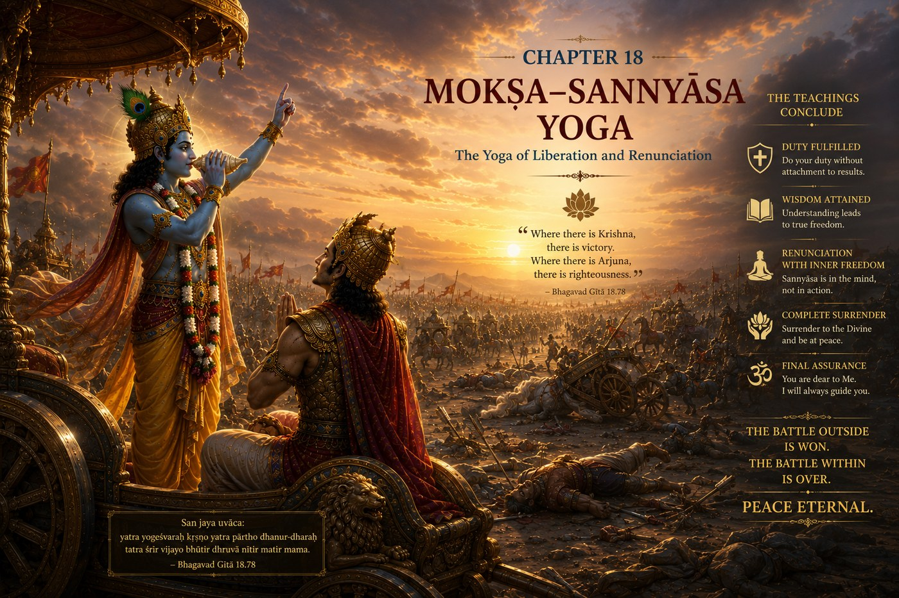

The GITA Project › Week 18 · Chapter 18

Week 18 · Chapter 18 · The Finale — Mokṣha Sannyāsa Yoga: The Yoga of Freedom Through Renunciation and Surrender
Student Theme — From Confusion to Clear, Responsible Action
Chapter SummaryWhat Happens in Chapter Eighteen
Chapter Eighteen is the culmination of the Bhagavad Gita. Arjuna asks about renunciation (Sannyāsa) and relinquishment (Tyāga), and Lord Shri Krishna summarizes the teachings of the previous seventeen chapters. He explains the nature of action, duty, knowledge, the three guṇas, faith, devotion, and the importance of performing one's Svadharma. True renunciation is giving up attachment to the fruits of action while faithfully fulfilling one's responsibilities according to Dharma. Lord Shri Krishna calls upon Arjuna to reflect deeply, choose wisely, and ultimately surrender to the Supreme Lord with complete trust. Arjuna's confusion is dispelled, his understanding is restored, and he resolves to act according to the Lord's instruction.
How the great teachers illuminate this chapter — each from their own lineage of wisdom.
Presents the final chapter as the completion of the journey from ignorance to Self-knowledge. Renunciation is ultimately the abandonment of ignorance and false identification with the body. Selfless action purifies the mind, while liberating knowledge reveals the eternal Self. The seeker's freedom lies in realizing the truth that transcends all bondage.
Emphasizes complete surrender (śaraṇāgati) to the Supreme Lord. Loving devotion reaches its highest fulfillment when the individual entrusts every action, every responsibility, and every outcome to God. Through Divine grace, the devotee is freed from fear and gains the confidence to perform Dharma with unwavering faith.
Teaches that liberation is attained through faithful dependence upon the Supreme Lord. Human effort, righteous conduct, and knowledge all find their fulfillment through Divine grace. The soul remains eternally distinct from the Lord while joyfully serving Him according to Dharma.
Presents Chapter Eighteen as a practical summary of purposeful living. Every teaching of the Bhagavad Gita points toward disciplined action, clear thinking, self-mastery, and service rooted in timeless values. Wisdom becomes meaningful only when translated into character and daily conduct.
Highlights Arjuna's transformation from confusion to conviction. Spiritual growth is a gradual process of learning, reflection, devotion, and practice. Trust in the Lord replaces fear, and surrender becomes a source of strength rather than weakness. The journey ends with confidence born of wisdom.
Common Threads of Dharma All five teachers affirm that the Bhagavad Gita culminates in the harmonious integration of knowledge, selfless action, devotion, discipline, and surrender to the Supreme Lord. Dharma is eternal and should be lived with humility, courage, compassion, and steadfast faith. Liberation is the natural fruit of a life aligned with eternal truth.
…we realize that every lesson we have learned prepares us to make one important choice: How will I live my life?
Every journey eventually reaches a moment of decision. Teachers can explain. Parents can guide. Friends can encourage. Mentors can inspire. But eventually, each of us must choose the direction of our own life. No one else can make that choice for us. Chapter Eighteen is the culmination of Lord Shri Krishna's entire conversation with Arjuna. It is not simply the end of a dialogue. It is the beginning of a life lived with understanding.
One question — After all the guidance you have received in your life, who finally has to decide how you will live?
A moment you may know — Someone who has taught you for years quietly steps back, and for the first time the next move is entirely yours to make.
This chapter's promise — You will see how eighteen weeks of teaching gather into one clear invitation: to choose Dharma, freely and with courage, for the rest of your life.
The conversation reaches its conclusion
The conversation that began with confusion now reaches its conclusion. Arjuna has listened, questioned, reflected, and learned. Lord Shri Krishna has patiently explained Dharma from every perspective — wisdom, action, knowledge, devotion, self-mastery, the eternal Self, the Divine, character, faith, and purpose. Now Lord Shri Krishna does something remarkable. He does not force Arjuna to obey. He does not demand unquestioning acceptance. Instead, after revealing the deepest wisdom of the Bhagavad Gita, He says, in essence: “Reflect upon this fully. Then choose your path.”
This is one of the greatest lessons in the entire Bhagavad Gita. True wisdom invites understanding. True teachers develop freedom. True Dharma is embraced through understanding, not compulsion.
Understanding the SituationImagine learning to ride a bicycle. At first, someone holds the seat. They encourage you, correct your mistakes, help you regain your balance. Then comes the moment when they quietly let go. For a few seconds, you continue riding on your own. That moment can feel both exciting and frightening.
Lord Shri Krishna now does something similar. He has guided Arjuna through every question. Now He invites Arjuna to stand with confidence and act according to his own understanding of Dharma. Growing up is much the same. There comes a time when we stop asking, “What should I do?” and begin asking, “What is the right thing to do?” The answer is no longer found by following others blindly. It is found by understanding Dharma and living it with courage.
The Court of Dharma™Six steps into the summit of the journey
- One Situation
- Lord Shri Krishna completes His teachings and invites Arjuna to make his own decision.
- One Dilemma
- Will Arjuna remain trapped in confusion, or will he act with clarity and courage?
- One Question
- Now that I understand Dharma more clearly, how will I choose to live?
- One Conversation
- Lord Shri Krishna brings together every major teaching of the Bhagavad Gita. He explains that each person's responsibilities should be performed according to Dharma, and that actions become meaningful when performed without selfish attachment. Knowledge, discipline, devotion, and character all work together — no single teaching stands alone. Then He offers one of the Gita's most compassionate invitations: to place one's trust in the Divine and live without fear — not because life will become easy, but because a life rooted in Dharma is never lived alone. Finally, Lord Shri Krishna becomes silent. The conversation has fulfilled its purpose, and now the decision belongs to Arjuna.
- One Virtue
- Courage / Wise Action — courage is not the absence of fear; it is choosing Dharma even when fear is present. Arjuna still stands on the same battlefield, but what has changed is Arjuna himself: he now understands, sees clearly, and chooses willingly.
- One Life Practice
- Return to the first page of your journal, measure how you have grown, and write a letter to your future self. (Full practice below.)
Two verses that close the journey
Verse 1 — Surrender and do not fear · 18.66
सर्वधर्मान्परित्यज्य मामेकं शरणं व्रज ।
अहं त्वां सर्वपापेभ्यो मोक्षयिष्यामि मा शुच: ॥
sarva-dharmān parityajya mām ekaṁ śharaṇaṁ vraja
ahaṁ tvāṁ sarva-pāpebhyo mokṣhayiṣhyāmi mā śhuchaḥ
“Abandoning all duties, come unto Me alone for shelter; sorrow not, I will liberate thee from all sins.”
— Bhagavad Gita 18.66 · trans. Annie Besant (1922), public domain — via Wikisource
What this does NOT mean — read this one slowly
scriptural review This is one of the most beloved and most discussed verses in the whole Gita, and teachers have understood it in more than one way. It does not mean abandoning your responsibilities — your studies, your family, your kindness, your duties. It comes after eighteen chapters that ask you to do your rightful work. Here “surrender” means trust: after you have done your sincere best, you release the fear and the need to control every outcome, and you place your trust in the Divine. It is the opposite of anxiety, not the opposite of responsibility. Because this verse is weighty and interpreted variously, treat it as an invitation to trust rather than a command to walk away from your life.
Words to Remember — sarva-dharmān all dharmas / duties · parityajya having let go of · śharaṇaṁ vraja take refuge, take shelter · mā śhuchaḥ do not grieve, do not fear.
In plain words. Imagine finishing everything you honestly could for something that matters, and then finally letting your shoulders drop — “I have done my part; I trust the rest.” That letting-go is what this verse offers. The last two words are among the gentlest in the Gita: do not fear.
Reflect: After you have truly done your best, how much do you still try to control what happens next?
Verse 2 — My confusion is gone · 18.73
नष्टो मोह: स्मृतिर्लब्धा त्वत्प्रसादान्मयाच्युत ।
स्थितोऽस्मि गतसन्देह: करिष्ये वचनं तव ॥
naṣhṭo mohaḥ smṛitir labdhā tvat-prasādān mayāchyuta
sthito 'smi gata-sandehaḥ kariṣhye vachanaṁ tava
“Destroyed is my delusion. I have gained knowledge through Thy grace, O Immutable One. I am firm, my doubts have fled away. I will do according to Thy word.”
— Bhagavad Gita 18.73 · trans. Annie Besant (1922), public domain — via Wikisource
Words to Remember — naṣhṭo mohaḥ the illusion is destroyed · smṛiti memory, clear understanding · gata-sandehaḥ free from doubt · kariṣhye I shall act.
In plain words. These are Arjuna's own words — the transformation of the entire Bhagavad Gita in a single line. The battlefield did not change. Dharma did not change. Lord Shri Krishna did not change. Arjuna changed. He began Chapter One overwhelmed by confusion; he ends here clear, steady, and ready to act. That is the journey of the Gita, and the journey of every sincere learner.
Reflect: Compared with the person who opened this book many weeks ago, where has your own confusion quietly turned into clarity?
Notice the order of these two verses. First comes trust (18.66), then comes clear, willing action (18.73). Surrender does not end in stillness — it ends in Arjuna standing up to do his rightful duty, free of fear. Freedom and responsibility arrive together.
Dharma LensWhen trust and responsibility seem to pull apart
Chapter Eighteen asks us both to act with full responsibility and to surrender the outcome in trust — which, in a real life, can feel like a contradiction.
A situation without an obvious answer
Ravi is the first in his family with a real chance at a scholarship. His parents have sacrificed for years and quietly assume he will take the safe, respected path they have planned. But over these months Ravi has come to believe his own Dharma leads somewhere different — work that means more to him but worries them. He has prayed, reflected, and done his honest best to understand. Now he must choose. Does “surrender and do not fear” mean trusting his parents' guidance and letting go of his own preference? Or does it mean doing his sincere duty as he now understands it, and trusting the Divine with the outcome — even if it disappoints the people he loves most?
Both readings are drawn straight from this chapter. Surrender could mean deferring in trust; it could also mean acting in trust. Which is Ravi's Dharma here?
Chapter Eighteen does not hand Ravi a single answer — and neither will this book. What it offers is a way to decide: seek understanding before reacting, act without selfish attachment, and then release the fear of the result. A thoughtful, sincere person might resolve Ravi's moment in more than one defensible way. What matters is not that everyone lands on the same choice, but that the choice grows from honest reflection and genuine trust rather than from fear, pride, or the wish to avoid a hard conversation.
Character in Practice · Courage / Wise ActionWhat it means. Choosing what Dharma asks even when fear is present — acting on your clearest understanding rather than waiting to feel unafraid.
What it does not mean. Recklessness, stubbornness, or ignoring wise counsel. Courage without wisdom is just risk; wisdom without courage is just intention.
In daily life. Saying the honest thing kindly; keeping a promise when it costs you; doing the right thing when no one is watching; standing up calmly for someone who is being treated unfairly.
How it's misread. As fearlessness. The Gita never says Arjuna stopped feeling fear — it says he acted rightly with fear present. That is braver, not weaker.
Recognizing progress — without self-righteousness. You hesitate less before doing what you know is right, and you need the applause less. Pair courage with humility, so that wise action never hardens into pride.
The exam you have prepared for, where the only thing left is to trust your work and let go of the panic. The friendship that needs one honest, gentle conversation you keep postponing. The path you sense is truly yours, even though it is not the easiest to explain. Chapter Eighteen speaks to all of these: do your sincere best, choose Dharma with courage, and then release the fear. The armies on your own battlefield do not vanish — but, like Arjuna, you can change.
Leadership LabImagine graduating from high school. You receive your diploma. Family and friends celebrate with you. Yet the diploma itself is not the true achievement. The true achievement is the person you have become through years of learning, discipline, friendships, challenges, and growth.
The Bhagavad Gita is much the same. Finishing eighteen chapters is not the goal. The goal is becoming the kind of person who continues living these teachings long after the book is closed. The greatest leaders are lifelong learners. They never stop growing. They never stop serving. They never stop seeking Dharma.
Discussion Circle- ObserveIn verse 18.73, what does Arjuna say has changed in him? Notice that he does not say the battlefield or the situation changed.
- InterpretWhat do you think “surrender” means in 18.66, given that the whole Gita has been urging Arjuna to do his duty? Trust, escape, or something else?
- ConnectDescribe a moment when you did your honest best and then had to let go of the outcome. How did that letting-go feel?
- Ethical tensionReturn to Ravi. Is his surrender better shown by trusting his parents' plan, or by acting on his own understanding of Dharma? Defend your view — then argue the other side fairly.
- ApplyWhat is one place in your life right now that calls for wise action plus trust — doing your part, then releasing the fear?
- ChallengeSomeone says, “‘Surrender’ just means giving up and letting life happen to you.” Using this chapter, respond thoughtfully — without dismissing why they might read it that way.
Purpose: gather eighteen weeks of learning into one honest reflection, and commit your growth to writing. Time: 25–30 min of quiet writing this week · Format: individual and private; only what you choose is shared in class · Materials: your journal from Week One, paper, an envelope you can seal.
- Find a quiet place without distractions. Open your journal to the very first page of this journey and read the questions you wrote before Chapter One.
- Ask yourself, and jot brief notes: How have I changed? What have I learned about Dharma? Which virtue has grown the most? Which virtue do I most want to keep strengthening?
- Now write a letter to your future self. Describe not the career or achievements you hope for, but your character, your values, your purpose, and your commitment to living according to Dharma.
- Seal the letter and write on the envelope the date one year from today.
- Keep it somewhere safe. Read it again one year from now, and notice how the journey has continued.
The “What Does Dharma Ask of Me Here?” Practice
Each day this week, pause once before reacting to something difficult — a message, a decision, a disagreement — and quietly ask: What does Dharma ask of me here? Then do your sincere best, and release the fear of how it turns out.
This single question is the whole Gita in miniature. It moves you, like Arjuna, from confusion toward clear, responsible action.
1. Personal. Think back to Chapter One. How have your questions changed since then, and how has your understanding grown?
2. Dharma. Where in your life is it hardest to “do your best, then let go” — where do you keep gripping the outcome?
3. Character. Which single teaching from Lord Shri Krishna do you most hope will stay with you for the rest of your life?
4. Action commitment. One place I will choose courage over fear this week, and how I will do it:
5. A private question (you never have to share this): If Lord Shri Krishna were sitting beside you today, what one piece of guidance do you sense He would hope you carry for the rest of your life?
For a parent or guardian — please listen more than you speak. This is a conversation, not a quiz.
1. Was there a moment when you had to make an important life decision mostly on your own? What did that feel like?
2. What does it mean to you to do your best and then trust the outcome?
3. What is one hope you quietly carry for the kind of person I am becoming?
Teacher Note — Chapter 18 (Finale)
Objective: students can explain that Chapter 18 gathers the whole Gita — knowledge, action, devotion, self-mastery, and character — into one way of living, and that Arjuna's transformation (18.73) models moving from confusion to clear, responsible action.
Sensitive-topic alert: verse 18.66 (“abandon all dharmas, surrender to Me”) is weighty and interpreted variously across traditions. Present it as trust after sincere effort, never as abandoning responsibilities, and keep it age-appropriate. scriptural review
Likely question: “Doesn't ‘surrender’ mean giving up?” → Point to the order of the verses: surrender (18.66) leads straight into willing action (18.73). It is releasing fear, not duty.
Misconception to avoid: treating the end of the book as the end of the practice. Emphasize that finishing eighteen chapters is not the goal — living them onward is.
Transition beyond the course: there is no “next chapter.” Frame the close as a beginning — the student now carries the journey into their own life. See “Looking Ahead: Living the Gita.”
Week in One Minute
- Teaching
- The whole Gita gathers here: do your rightful duty without selfish attachment, trust the Divine, release fear, and choose Dharma with courage.
- Key verse
- “By Your grace my illusion has been dispelled… I am now free from doubts, and I shall act.” — 18.73
- Dharma insight
- Surrender is trust, not escape — it leads to clear, responsible action, not withdrawal from life.
- Practice
- Each day, pause and ask, “What does Dharma ask of me here?” — then act, and let go of the outcome.
A question to carry for life — Wherever I go, will I pause and ask what Dharma asks of me here?
The Bhagavad Gita ends. Your journey does not. There will be many more Kurukshetras — new responsibilities, new opportunities, new challenges, new joys, new questions. Each will invite you to remember what Lord Shri Krishna patiently taught Arjuna: Dharma is eternal, even as the circumstances of life keep changing, and your understanding and character will keep deepening.
Wherever life takes you — at every place, in every situation, at every stage of life — may you pause and ask, “What does Dharma ask of me here?” May you seek wisdom before reacting; choose courage over fear; service over selfishness; truth over convenience; compassion over anger; humility over pride. May you choose Dharma, again and again. For that is the journey Lord Shri Krishna lovingly began with Arjuna — and that is the journey now entrusted to each one of us.
The GITA Project™ · Scripture → Understanding Dharma → Character
Ancient Wisdom. Modern Leaders. One's Own Journey Through Life.
Hari Om Tat Sat.
A gentle note: reaching the end of something you have worked at for many weeks can stir big feelings — pride, relief, even a little sadness that it is over. All of that is normal. If any question in this chapter brings up something heavier that you would like to talk through, please reach out to a trusted adult, teacher, or school counsellor. Finishing well includes caring for yourself.